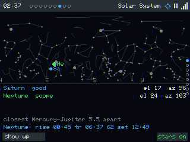
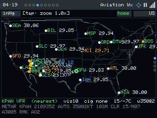
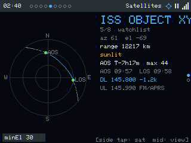
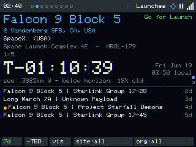
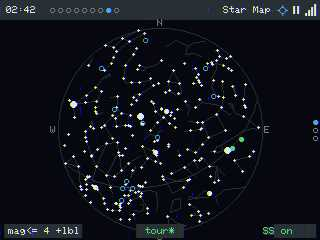
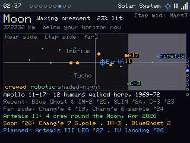
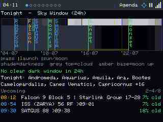
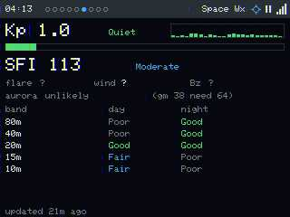
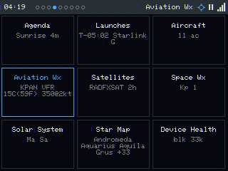

A whole observation deck for the sky — on a $12 touchscreen.
Overhead turns a Cheap Yellow Display (ESP32-2432S028R) into an always-on
air-&-space situational-awareness dashboard: satellites passing overhead, rocket
launches, nearby aircraft, aviation & space weather, the solar system, a live
star map, and a tonight-at-a-glance agenda — all location-aware, with an
"Intelligent Focus" director that surfaces the thing worth looking at right now.
Its heart: putting the awe of far-away missions on a kid's bedside table,
updating in real time — "look, the ISS goes over our house in 4 minutes."
Flash it from your browser
Plug the board in over USB, pick your board variant, then click Install and choose its serial port.
Flashing takes ~1 minute and erases the device.
Your browser can't do Web Serial — use desktop Chrome or Edge.
Serial access was blocked — allow it and retry.
Your browser can't do Web Serial — use desktop Chrome or Edge.
Serial access was blocked — allow it and retry.
Your browser can't do Web Serial — use desktop Chrome or Edge.
Serial access was blocked — allow it and retry.
Your browser can't do Web Serial — use desktop Chrome or Edge.
Serial access was blocked — allow it and retry.
Targets: the ESP32 2.8" CYD (ILI9341) or the 5" Crowpanel Advance
(ESP32-S3, 800×480). On a CYD, not sure which? Flash CYD2USB first; if the screen is
sideways/portrait, upside-down, or the colours look wrong, either reflash Elegoo or fix it live in
Settings → Screen (rotation / invert / R–B order). For the big panel pick Crowpanel Advance 5in. The Crowpanel HMI 5in / 502727 option is
experimental — its RGB display isn't verified yet, so flash it only if you're helping bring it up.
After flashing, join the Overhead-setup Wi-Fi to enter your network.
Browser Desktop Chrome or Edge (Web Serial). Won't work on Firefox/Safari/mobile.
Cable A data USB cable + the CH340 driver if your OS needs it.
What you get

Solar System — what's up tonight. Sun/Moon/planets by az/el with
naked-eye visibility, moon phase, rise/transit/set and the closest conjunction.

Aviation Wx — the sky's weather. Each airport dot is coloured by
pressure (inHg) and its code by flight category; layers cycle category / cloud /
wind / pressure, and zooming reveals per-field barbs + readouts.

Satellites — catch the pass. Polar az/el trajectory with AOS/LOS,
max elevation, a "✱ VISIBLE to eye ✱" verdict, live Doppler, and tap-chips per
tracked bird.

Launches — what's going up. Next launch with a big T- countdown,
vehicle/mission/pad, and a visibility verdict ("see it from here?").

Star Map — the whole sky. ~1500 stars, constellation figures,
Messier markers, planets & the ecliptic; tap to zoom, plus saved "memory skies".

Moon — near & far side. Phase, distance, landing-site map and
day/night terminator, with a hand-kept mission timeline.

Agenda — tonight at a glance. A 24h sky-window timeline (darkness,
cloud, moon-up bands + event ticks), the clear-&-dark verdict, and what's coming.

Space Wx — is the Sun acting up? Kp with history, SFI, aurora
chance for your latitude, and an HF band-condition table.

3×3 quick-jump. Every tile shows a live token (next AOS, T-minus,
nearest METAR, Kp, health) — tap the status dots to open it.
Then what?
On first boot it opens a Wi-Fi setup portal; after that it geolocates, syncs time,
and starts pulling live feeds. Tap the status strip to switch AUTO/MANUAL, tap a page
title for its views menu, and reach the full web UI at the device's address
(/ settings, /remote live screen + control, /update OTA).
Runs real HTTPS feeds on a no-PSRAM board — heap-floor-aware TLS that
serves stale instead of crashing, a serialized non-blocking net task, a Wi-Fi watchdog,
and a remote debug/automation API. See the repo for the engineering write-up.
Source, hardware guide & backlog: github.com/JamesDavid/Overhead
· Free for personal/non-commercial use (PolyForm Noncommercial 1.0.0). · DE KE7AQA